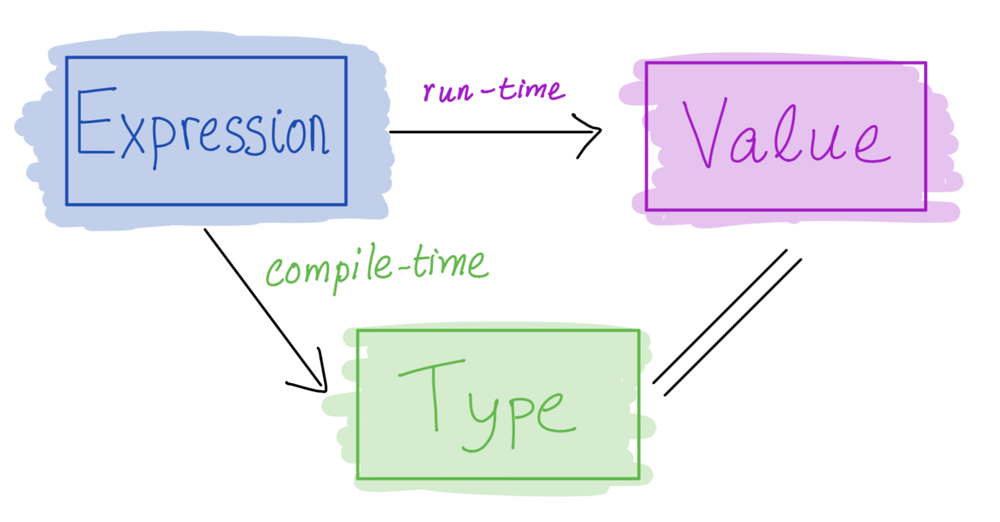

What is Haskell?
A typed, lazy, purely functional programming language
Haskell = λ-calculus +
- better syntax
- types
- built-in features
- booleans, numbers, characters
- records (tuples)
- lists
- recursion
- …
Why Haskell?
Haskell programs tend to be concise and correct
QuickSort in C
void sort(int arr[], int beg, int end){
if (end > beg + 1){
int piv = arr[beg];
int l = beg + 1;
int r = end;
while (l != r-1)
if(arr[l] <= piv) l++;
else swap(&arr[l], &arr[r--]);
if(arr[l]<=piv && arr[r]<=piv)
l=r+1;
else if(arr[l]<=piv && arr[r]>piv)
{l++; r--;}
else if (arr[l]>piv && arr[r]<=piv)
swap(&arr[l++], &arr[r--]);
else r=l-1;
swap(&arr[r--], &arr[beg]);
sort(arr, beg, r);
sort(arr, l, end);
}
}
QuickSort in Haskell
sort [] = []
sort (x:xs) = sort ls ++ [x] ++ sort rs
where
ls = [ l | l <- xs, l <= x ]
rs = [ r | r <- xs, x < r ]
Goals for today
- Understand the code above
- Understand what typed, lazy, and purely functional means (and why it’s cool)
The Haskell Eco-System
Batch compiler:
ghcCompile and run large programsInteractive Shell
ghciShell to interactively run small programs onlineBuild Tool
stackBuild tool to manage libraries etc.
Haskell vs λ-calculus: similarities
(1) Programs
A program is an expression (not a sequence of statements)
It evaluates to a value (it does not perform actions)
λ:
(\x -> x) apple -- =~> appleHaskell:
(\x -> x) "apple" -- =~> "apple"
(2) Functions
Functions are first-class values:
- can be passed as arguments to other functions
- can be returned as results from other functions
- can be partially applied (arguments passed one at a time)
(\f x -> f (f x)) (\z -> z + 1) 0 -- =~> ???But: unlike λ-calculus, not everything is a function!
(3) Top-level bindings
Like in Elsa, we can name terms to use them later
Elsa:
let T = \x y -> x
let F = \x y -> y
let PAIR = \x y -> \b -> ITE b x y
let FST = \p -> p T
let SND = \p -> p F
eval fst:
FST (PAIR apple orange)
=~> appleHaskell:
haskellIsAwesome = True
pair = \x y -> \b -> if b then x else y
fst = \p -> p haskellIsAwesome
snd = \p -> p False
-- In GHCi:
> fst (pair "apple" "orange") -- "apple"The names are called top-level variables
Their definitions are called top-level bindings
Better Syntax: Equations and Patterns
You can define function bindings using equations:
pair x y b = if b then x else y -- same as: pair = \x y b -> ...
fst p = p True -- same as: fst = \p -> ...
snd p = p False -- same as: snd = \p -> ...
A single function binding can have multiple equations with different patterns of parameters:
pair x y True = x -- If 3rd arg evals to True,
-- use this equation;
pair x y False = y -- Otherwise, if 3rd evals to False,
-- use this equation.At run time, the first equation whose pattern matches the actual arguments is chosen
For now, a pattern is:
a variable (matches any value)
or a value (matches only that value)
Same as:
pair x y True = x -- If 3rd arg evals to True,
-- use this equation;
pair x y b = y -- Otherwise, use this equation.
Same as:
pair x y True = x
pair x y _ = y -- Wildcard pattern `_` is like a variable
-- but cannot be used on the right
QUIZ
Which of the following definitions of pair is not the same as the original?
pair = \x y -> \b -> if b then x else yA. pair x y = \b -> if b then x else y
B.
pair x _ True = x
pair _ y _ = yC. pair x _ True = x
D.
pair x y b = x
pair x y False = yE. C and D
Equations with guards
An equation can have multiple guards (Boolean expressions):
cmpSquare x y | x > y*y = "bigger :)"
| x == y*y = "same :|"
| x < y*y = "smaller :("Same as:
cmpSquare x y | x > y*y = "bigger :)"
| x == y*y = "same :|"
| otherwise = "smaller :("
Recursion
Recursion is built-in, no fixpoint combinator needed!
EXERCISE: Sum
Write a haskell function that sums numbers up to some natural number n:
sum n = ???
One solution:
sum n = if n == 0
then 0
else n + sum (n - 1)More idiomatic solution:
sum 0 = 0
sum n = n + sum (n - 1)
The scope of variables
Top-level variable have global scope, so you can write:
message = if haskellIsAwesome -- this var defined below
then "I love CSE 130"
else "I'm dropping CSE 130"
haskellIsAwesome = True
Or you can write:
-- What does f compute?
f 0 = True
f n = g (n - 1) -- mutual recursion!
g 0 = False
g n = f (n - 1) -- mutual recursion!
Is this allowed?
haskellIsAwesome = True
haskellIsAwesome = False -- changed my mind
Local variables
You can introduce a new (local) scope using a let-expression:
sum 0 = 0
sum n = let n' = n - 1
in n + sum n' -- the scope of n' is the term after in
Syntactic sugar for nested let-expressions:
sum 0 = 0
sum n = let
n' = n - 1
sum' = sum n'
in n + sum'
If you need a variable whose scope is an equation, use the where clause instead:
cmpSquare x y | x > z = "bigger :)"
| x == z = "same :|"
| x < z = "smaller :("
where z = y*y
Types
What would Elsa say?
let WEIRDO = ONE ZERO
What would Python say?
def weirdo():
return 0(1)
What would Java say?
void weirdo() {
int zero;
zero(1);
}
In Haskell every expression either has a type or is ill-typed and rejected statically (at compile-time, before execution starts)
- like in Java
- unlike λ-calculus or Python
weirdo = 1 0 -- rejected by GHC
Elements of Haskell

- Core program element is an expression
- Every valid expression has a type (determined at compile-time)
- Every valid expression reduces to a value (computed at run-time)
Type annotations
You can annotate your bindings with their types using ::, like so:
-- | This is a Boolean:
haskellIsAwesome :: Bool
haskellIsAwesome = True
-- | This is a string
message :: String
message = if haskellIsAwesome
then "I love CSE 130"
else "I'm dropping CSE 130"
-- | This is a word-size integer
rating :: Int
rating = if haskellIsAwesome then 10 else 0
-- | This is an arbitrary precision integer
bigNumber :: Integer
bigNumber = factorial 100If you omit annotations, GHC will infer them for you
- Inspect types in GHCi using
:t - You should annotate all top-level bindings anyway! (Why?)
Function Types
Functions have arrow types:
\x -> ehas typeA -> B- if
ehas typeBassumingxhas typeA
For example:
> :t (\x -> if x then `a` else `b`) -- ???
You should annotate your function bindings:
sum :: Int -> Int
sum 0 = 0
sum n = n + sum (n - 1)With multiple arguments:
pair :: String -> (String -> (Bool -> String))
pair x y b = if b then x else ySame as:
pair :: String -> String -> Bool -> String
pair x y b = if b then x else y
QUIZ
With pair :: String -> String -> Bool -> String, what would GHCi say to
>:t pair "apple" "orange"A. Syntax error
B. The term is ill-typed
C. String
D. Bool -> String
E. String -> String -> Bool -> String
Lists
A list is
either an empty list
[] -- pronounced "nil"or a head element attached to a tail list
x:xs -- pronounced "x cons xs"
Examples:
[] -- A list with zero elements
1:[] -- A list with one element: 1
(:) 1 [] -- Same thing: for any infix op,
-- (op) is a regular function!
1:(2:(3:(4:[]))) -- A list with four elements: 1, 2, 3, 4
1:2:3:4:[] -- Same thing (: is right associative)
[1,2,3,4] -- Same thing (syntactic sugar)
Terminology: constructors and values
[] and (:) are called the list constructors
We’ve seen constructors before:
TrueandFalseareBoolconstructors0,1,2are… well, it’s complicated, but you can think of them asIntconstructors- these constructions didn’t take any parameters, so we just called them values
In general, a value is a constructor applied to other values
- examples above are list values
The Type of a List
A list has type [A] if each one of its elements has type A
Examples:
myList :: [Int]
myList = [1,2,3,4]-- myList' :: ??
myList' = ['h', 'e', 'l', 'l', 'o']-- myList'' :: ???
myList'' = [1, 'h'] -- myList''' :: ???
myList''' = []
EXERCISE: range
Write a function upto that takes in a lower bound l and an upper bound u and returns a list of all the numbers from l to u (inclusive)
-- | List of integers from n upto m
upto :: Int -> Int -> [Int]
upto l u = ???
There’s also syntactic sugar for this!
[1..7] -- [1,2,3,4,5,6,7]
[1,3..7] -- [1,3,5,7]
Functions on lists: length
-- | Length of the list
length :: ???
length xs = ???
Pattern matching on lists
-- | Length of the list
length :: [Int] -> Int
length [] = 0
length (_:xs) = 1 + length xs
A pattern is either a variable (incl. _) or a value
A pattern is
- either a variable (incl.
_) - or a constructor applied to other patterns
Pattern matching attempts to match values against patterns and, if desired, bind variables to successful matches.
QUIZ
What happens when we match the pattern (x:xs) against the value [1]?
A. Does not match
B. x is bound to 1, and xs is unbound
C. xs is bound to [1], and x is unbound
D. x is bound to 1, xs is bound to []
E. x is bound to 1, xs is bound to [1]
EXERCISE: counting zeros
Write a function count0 that takes in a list of integers and returns the number of zeros in the list:
count0 :: [Int] -> Int
count0 = ???
QUIZ
Which of the following is not a pattern?
A. (1:xs)
B. (_:_:_)
C. [x]
D. [1+2,x,y]
E. all of the above
Some useful library functions
-- | Is the list empty?
null :: [t] -> Bool
-- | Head of the list
head :: [t] -> t -- careful: partial function!
-- | Tail of the list
tail :: [t] -> [t] -- careful: partial function!
-- | Length of the list
length :: [t] -> Int
-- | Append two lists
(++) :: [t] -> [t] -> [t]
-- | Are two lists equal?
(==) :: [t] -> [t] -> BoolYou can search for library functions on Hoogle!
Pairs
myPair :: (String, Int) -- pair of String and Int
myPair = ("apple", 3)(,) is the pair constructor
Field access:
-- Option 1: using library functions:
whichFruit = fst myPair -- "apple"
howMany = snd myPair -- 3
EXERCISE: Destructing pairs
Define the following function:
isEmpty :: (String, Int) -> Bool
isEmpty p = (fst p == "") || (snd p == 0)but without using fst or snd!
-- Using pattern matching:
isEmpty (x, y) = x == "" || y == 0
-- With multiple equations (more idiomatic):
isEmpty ("", _) = True
isEmpty (_, 0) = True
isEmpty _ = False
You can use pattern matching not only in equations, but also in λ-bindings and let-bindings!
-- pattern matching in lambda:
isEmpty = \(x, y) -> x == "" || y == 0
-- pattern matching in let:
isEmpty p = let (x, y) = p in x == "" || y == 0
-- Now p is the whole pair and x, y are first and second:
isEmpty p@(x, y) = x == "" || y == 0
Tuples
Can we implement triples like in λ-calculus?
Sure! But Haskell has native support for n-tuples:
myPair :: (String, Int)
myPair = ("apple", 3)
myTriple :: (Bool, Int, [Int])
myTriple = (True, 1, [1,2,3])
my4tuple :: (Float, Float, Float, Float)
my4tuple = (pi, sin pi, cos pi, sqrt 2)
...
-- And also:
myUnit :: ()
myUnit = ()
QUIZ
Which of the following terms is ill-typed?
You can assume that (+) :: Int -> Int -> Int.
A. (\(x,y,z) -> x + y + z) (1, 2, True)
B. (\(x,y,z) -> x + y + z) (1, 2, 3, 4)
C. (\(x,y,z) -> x + y + z) [1, 2, 3]
D. (\x y z -> x + y + z) (1, 2, 3)
E. all of the above
List comprehensions
A convenient way to construct lists from other lists:
[toUpper c | c <- s] -- Convert string s to upper case
[(i,j) | i <- [1..3],
j <- [1..i] ] -- Multiple generators
[(i,j) | i <- [0..5],
j <- [0..5],
i + j == 5] -- Guards
QuickSort in Haskell
sort :: [Int] -> [Int]
sort [] = []
sort (x:xs) = sort ls ++ [x] ++ sort rs
where
ls = [ l | l <- xs, l <= x ]
rs = [ r | r <- xs, x < r ]
What is Haskell?
A typed, lazy, purely functional programming language
Haskell is statically typed
Every expression either has a type, or is ill-typed and rejected at compile time
Why is this good?
- catches errors early
- types are contracts (you don’t have to handle ill-typed inputs!)
- enables compiler optimizations
Haskell is purely functional
Functional = functions are first-class values
Pure = a program is an expression that evaluates to a value
no side effects!
unlike in Python, Java, etc:
public int f(int x) { calls++; // side effect! System.out.println("calling f"); // side effect! launchMissile(); // side effect! return calls; }in Haskell, a function of type
Int -> Intcomputes a single integer output from a single integer input and does nothing else
Referential transparency: The same expression always evaluates to the same value
- More precisely: In a scope where
x1, ..., xnare defined, all occurrences ofewithFV(e) = {x1, ..., xn}have the same value
Why is this good?
- easier to reason about (remember
x++vs++xin C++?) - enables compiler optimizations
- especially great for parallelization (
e1 + e2: we can always computee1ande2in parallel!)
Haskell is lazy
An expression is evaluated only when its result is needed
Example: take 2 [1 .. (factorial 100)]
take 2 ( upto 1 (factorial 100))
=> take 2 ( upto 1 933262154439...)
=> take 2 (1:(upto 2 933262154439...)) -- def upto
=> 1: (take 1 ( upto 2 933262154439...)) -- def take 3
=> 1: (take 1 (2:(upto 3 933262154439...)) -- def upto
=> 1:2:(take 0 ( upto 3 933262154439...)) -- def take 3
=> 1:2:[] -- def take 1Why is this good?
can implement cool stuff like infinite lists:
[1..]-- first n pairs of co-primes: take n [(i,j) | i <- [1..], j <- [1..i], gcd i j == 1]encourages simple, general solutions
but has its problems too :(
That’s all folks!